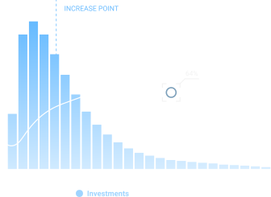

Login
Login
We generate performance
smart and innovative -
simple different.

We support your financial freedom and future through the outperfomance
capabilities of our model against the selected indices
The investment horizon consists of an equity-selection whose underlying indices grasp on more than 95% of the global market capitalization of all major liquid traded equity markets.
Our allocation stems solely from quantitative market indicators and therefore excludes discretionary opinions. Furthermore, our model eases the usual rigid concept of linear correlations and standard normal distribution.
Core for our selection is an optimization of the well-renounced Black-Littermann approach. As a result, the algorithm generates a robust medium to long-term return exceeding the corresponding index.
Anomalies leading strong market movements are anticipated and result in a controlled allocation reaction. Thus, the probability of loss remains significantly below that of the corresponding market.
The investment process of QuantStyle Capital Management is based on a solely
quantitative approach, which only considers certain market indicators and will not take subjective opinions
regarding single securities or markets into consideration. Our investment model excludes common assumptions
such as normally distributed or linear correlations and therefore offers returns above the performance
compared to the respective index, especially in times of falling markets.
We apply a modified Black-Litterman approach. The modification generates a robust excess return beating the
selected index - with less implied risk. Steering the QuantStyle Capital Management investment model is
long-term capital growth.
The final allocation to sectors and the subsequent selection is the unaltered result of the applied selection
algorithm.
The selection of individual investment stocks is only based on stochastic opinion of the market and is subject
to a balanced risk/return approach. Consequently, the focus of QuantStyle Capital Management is not return
maximization, but a medium to long-term, robust yield generation. Currencies and the respective interest rate
risks are a residual component of the model and will not be hedged. The investment horizon focusses
essentially on equities. These are listed and monitored on renounced markets and are traded on a daily and
ongoing basis. Therefore, liquidity risk is avoided. In times of major market volatility, all securities may
be sold as part of a loss limitation process, so that the portfolio can also be fully invested in near-money
market instruments in these severe situations.
QuantStyle Capital Management GmbH founded in Frankfurt am Main at the beginning of 2020 as an independent, specialised investment boutique for quantitative asset management. Our goal is to achieve a first-class performance for our customers in the equity markets. This we realise by clearly defined, modern, and transparent processes.
In addition to various planned public funds, each has one or more stock indices as a benchmark, we offer individual special fund mandates for institutional clients as well as family offices. As we act completely independently, we are free to choose our business partners such as investment companies and banks or are able to flexibly respond to our customers' wishes.
If you are interested in our investment approach or have questions about our product range: we are happy to help you.
Over 30 years of experience in the investment industry

CEO
Jörg Kaden has been working in the financial sector for over 30 years. During this time he has held various positions at various capital management companies. Due to his many years of experience in various management positions, he has profound knowledge in administration, sales (private label & insourcing) as well as in the development of a KVG and is a licensed KVG managing director. Mr. Kaden is responsible for administration and sales in the management of QuantStyle Capital Management GmbH.

STO, Sales
Norman Falkenberg has been active in the finance and IT sector for over 25 years. Since 2000, he has been primarily active in the asset management industry. In many projects he has already successfully built up new business areas in investment companies. According to his profound experience as founder and managing director of a software system provider and a management consultancy for the financial industry, he has many contacts in the industry. Due to his university degree in computer science, he has a broad knowledge in the construction and operation of a modern and effective IT infrastructure. Norman Falkenberg is responsible for technology and sales at QuantStyle Capital Management GmbH.
QuantStyle Capital Management considers sustainability aspects at all levels of its activity based on the ESG (environmental, social and governance criteria) approach.
An important criterion for responsible investing is the exclusion from the investment universe of companies and issuers that have a clearly negative balance sheet with regard to environmental aspects. High consumption of fossil fuels, low energy efficiency or generation of serious environmental damage are examples of negative criteria.
Our activity is based on the principles of social responsibility – Social aspects play a major role in QCM's investment decisions. It is consciously avoided to invest in companies where inter alia human rights violations, corruption or the manufacture of cluster munitions or nuclear weapons are part of the business practices.
QCM, on behalf of the investors, pays particular attention to exerting influence on the companies to promote compliance with corporate governance principles for sustainable management and good corporate governance. The aspects considered include CO2 emissions, use of renewable energies, environmental issues, social standards, controversial business areas and investments.